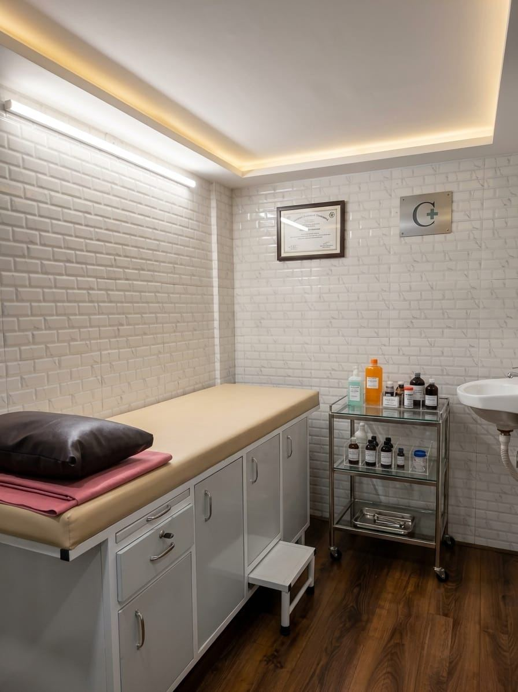

Fracture & Trauma Management
Care for broken bones and injuries from falls, road traffic and workplace accidents.
Home / Services
Consultation, diagnosis and treatment for bone, joint, spine and trauma conditions at Dr. Adarsh Patil's Orthopaedic Clinic in Sector 1, Sanpada, Navi Mumbai.
Dr. Adarsh D. Patil treats the full range of bone, joint, spine and trauma conditions at the clinic in Sanpada, Navi Mumbai.
Care for broken bones and injuries from falls, road traffic and workplace accidents.
Assessment and treatment of knee, hip and shoulder pain, osteoarthritis and inflammatory arthritis.
Diagnosis and management of joint stiffness, swelling, reduced range of motion and instability.
Evaluation of back and neck pain, disc-related problems and nerve compression symptoms.
Ligament tears, shoulder problems and sports-related injuries with a return-to-activity plan.
Surgical and non-surgical treatment of hand and wrist conditions, following a fellowship in hand surgery.
Reduced bone density, fracture risk assessment and management of metabolic bone conditions.
Ilizarov external fixation for complex fractures, non-union and deformity correction.
Assessment and treatment of joint pain, osteoarthritis, inflammatory arthritis, gout and osteoporosis, including medication, injections and rehabilitation guidance.
Read MoreEvaluation of back and neck pain, disc-related problems and nerve compression, with conservative care, physiotherapy referral and spine surgery when indicated.
Read MoreCare for fractures and injuries, including plaster and bracing, fracture fixation, and Ilizarov external fixation for complex or non-healing bone injuries.
Read MoreMinimally invasive keyhole joint surgery (arthroscopy) for shoulder and knee problems, and joint replacement surgery (arthroplasty) for advanced joint damage.
Read MoreSurgical and non-surgical treatment of hand and wrist conditions, following a completed fellowship in hand surgery.
Read MoreDiagnosis and management of ligament injuries, sports-related injuries, shoulder problems and bone deformities, with a return-to-activity plan.
Read MoreJoint pain can come from wear of the joint surface, inflammation, crystal deposits such as gout, or from reduced bone density. Assessment at the clinic in Sanpada starts with a clinical examination and a review of any X-rays or blood reports you bring with you.
Treatment may include medication, activity modification, physiotherapy referral, bracing, or intra-articular injections. Where joint damage is advanced and symptoms are not controlled, joint replacement surgery is discussed as an option at affiliated hospitals in Navi Mumbai.
Back and neck pain is assessed for its origin — muscular, disc-related, degenerative, or associated with nerve compression. Symptoms such as radiating pain, numbness or weakness are examined specifically at the clinic in Sanpada.
Most spinal problems are managed without surgery, using medication, posture and activity guidance and physiotherapy. Spine surgery is considered where symptoms persist or where there are progressive neurological signs, performed at affiliated hospitals in Navi Mumbai.
Fracture and trauma care covers injuries from falls, road traffic accidents, workplace incidents and sport. Initial care includes assessment, pain relief, and immobilisation with plaster or bracing where appropriate.
Operative treatment includes fracture fixation with plates, screws, nails or wires, and Ilizarov external fixation for complex fractures, non-union and deformity correction. Surgery is carried out at the affiliated hospitals listed on the about page.
Arthroscopy is minimally invasive joint surgery carried out through small incisions using a camera and fine instruments. It is used for diagnosis and treatment of certain knee and shoulder problems, including ligament and cartilage injuries.
Joint replacement surgery (arthroplasty) replaces a damaged joint surface with an implant. The decision to proceed is based on symptoms, examination findings, imaging and how much daily activity is affected.
Hand and wrist conditions are assessed for the effect on grip, dexterity and daily function. Non-surgical care includes splinting, injections and hand therapy guidance at the clinic in Sanpada.
Surgical treatment of hand and wrist conditions is offered following a completed fellowship in hand surgery, at affiliated hospitals in Navi Mumbai.
Ligament and sports injuries are examined for joint stability, range of motion and associated cartilage or tendon damage. Shoulder problems and bone deformities are assessed in the same consultation setting.
Management is staged: initial protection and pain control, progressive rehabilitation, and reconstruction where instability persists. A return-to-activity plan is set out and reviewed at follow-up.
Ten condition groups are seen at the clinic. Bring any earlier films and reports to your consultation.
Pain, stiffness or swelling in the knee, hip, shoulder or other joints.
Osteoarthritis and inflammatory arthritis affecting one or more joints.
Reduced bone density and the fracture risk that comes with it.
Sudden joint pain and swelling caused by uric acid crystal deposits.
Spinal pain, disc-related problems and nerve compression symptoms.
Stiffness, instability, rotator cuff and other shoulder conditions.
Broken bones and injuries from falls, road traffic and workplace accidents.
Ligament tears and instability, commonly of the knee and ankle.
Injuries arising from training, recreational and competitive sport.
Congenital and acquired deformities affecting limb alignment or length.

Surgical procedures are performed at the affiliated hospitals in Navi Mumbai; the Sanpada clinic is used for consultation, examination and follow-up.

Recovery is reviewed at scheduled follow-up visits at the clinic in Sanpada, with rehabilitation adjusted to how the joint or bone is healing.
From first consultation through to follow-up, these services are available at the orthopaedic clinic in Sector 1, Sanpada, Navi Mumbai.
Clinical examination, diagnosis and treatment planning for bone, joint, spine and trauma conditions at the clinic in Sanpada.
Review of imaging films and reports brought by the patient during the consultation, with findings explained in plain language.
Immobilisation and bracing for fractures, sprains and post-injury care at the Sanpada clinic.
Realignment and stabilisation of broken bones with plates, screws, nails or wires at affiliated hospitals in Navi Mumbai.
Minimally invasive joint surgery for knee and shoulder problems, performed through small keyhole incisions.
Arthroplasty to replace a damaged joint surface with an implant, for advanced arthritis and joint damage.
Surgical treatment of hand and wrist conditions, following a completed fellowship in hand surgery.
Joint injections for pain relief and inflammation control, administered at the clinic.
Physiotherapy referral, activity modification advice and a staged return-to-movement plan.
Scheduled review of healing, recovery and treatment progress at the clinic in Sanpada.
Orthopaedic consultations are Monday to Sunday, by appointment. Call or WhatsApp +91 70205 25460 to book an appointment at the clinic in Sanpada, Navi Mumbai.